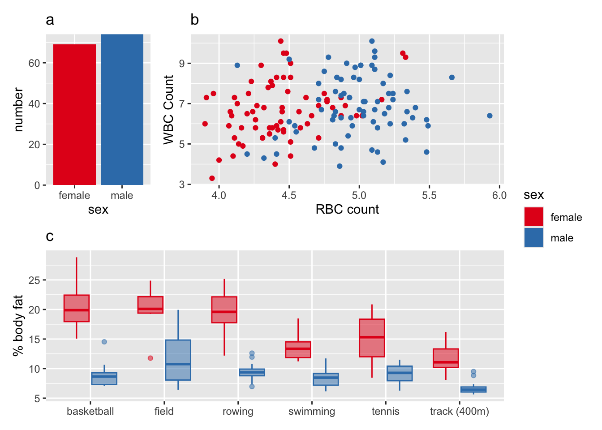
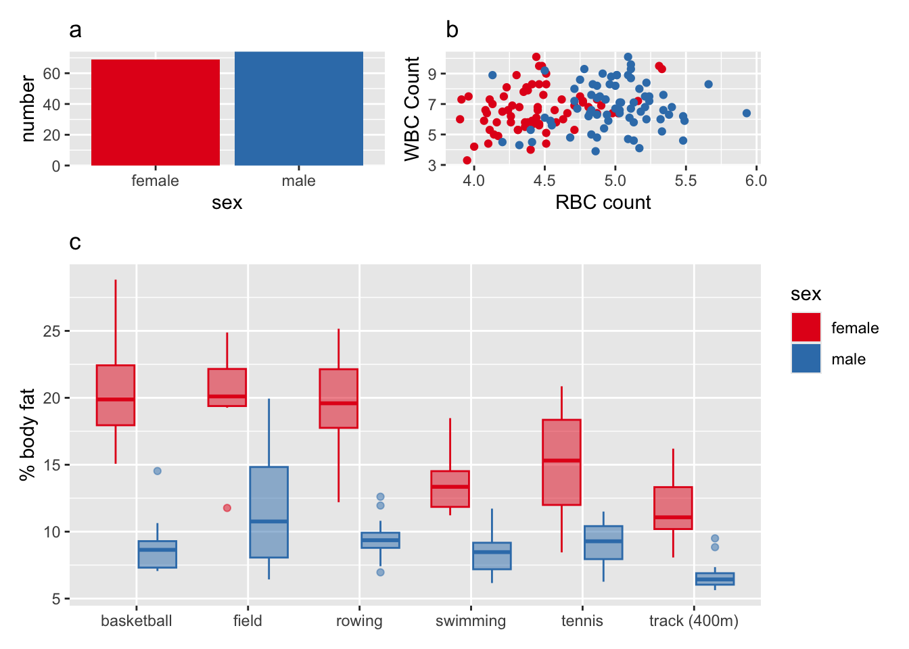
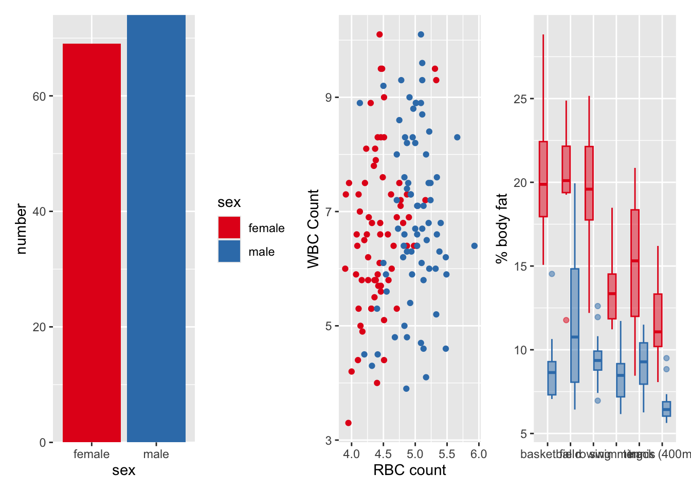
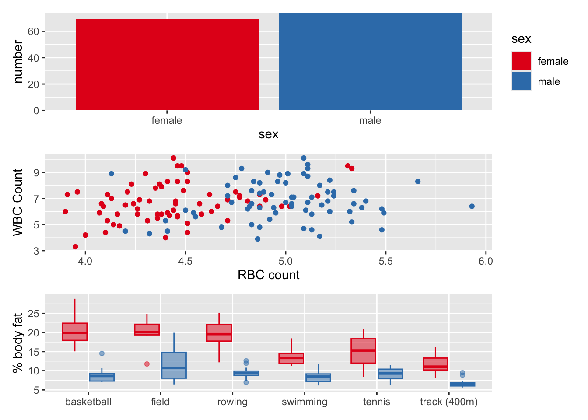
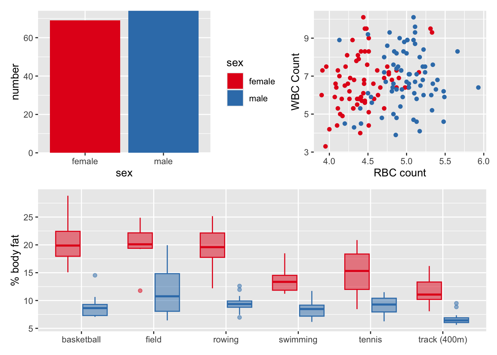
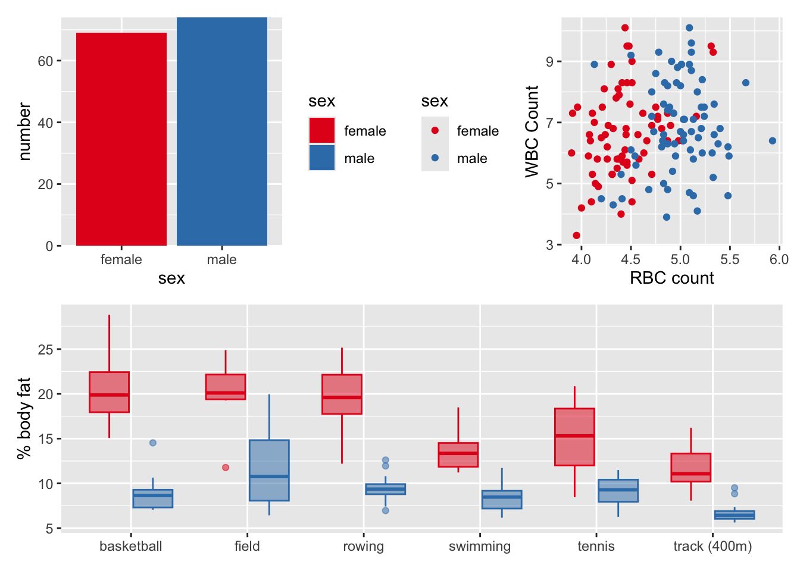
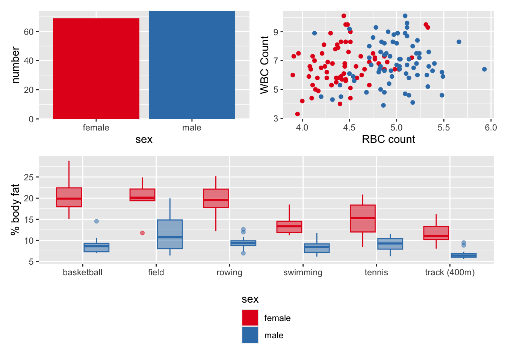
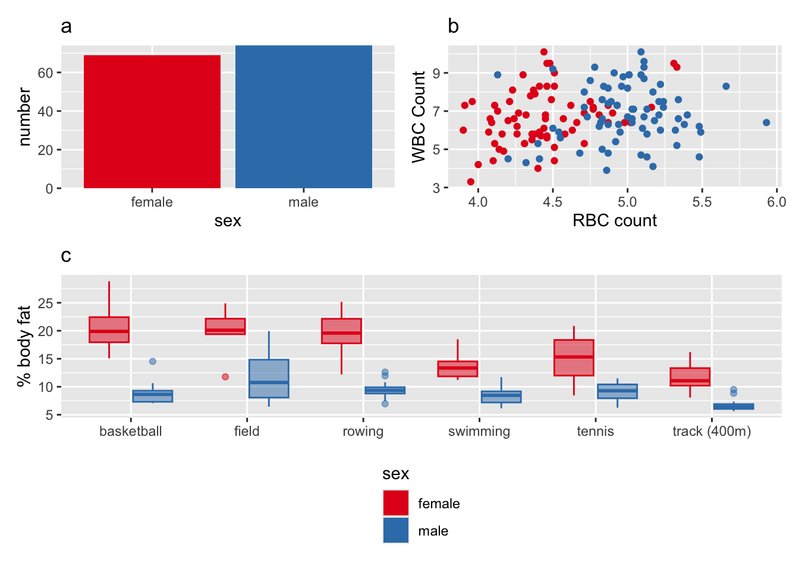

(p[["bar"]] + p[["scatter"]] + plot_layout(widths = c(1, 3))) / p[["box"]] +
plot_layout(guides = "collect")
(p[["bar"]] + p[["scatter"]]) / p[["box"]] +
plot_layout(guides = "collect", heights = c(1, 3))
Implementing compound figures in R
Kris Sankaran
In the last set of notes we discussed principles for designing effective compound figures. In these notes, we’ll review the patchwork R package, which can be used to implement compound figures.
This package creates a simple syntax for combining figures,
p1 + p2 concatenates two figures horizontallyp1 / p2 concatenates two figures verticallyThis idea is simple, but becomes very powerful once we realize that we can define a whole algebra on plot layouts,
p1 + p2 + p3 concatenates three figures horizontallyp1 / p2 / p3 concatenates three figures vertically(p1 + p2) / p3 Concatenates the first two figures horizontally, and places the third below both.Before we illustrate the use of this package, let’s read in the athletes data from the previous notes. The code below constructs the three component plots that we want to combine. Though it looks like a lot of code, it’s just because we are making several plots and styling each one of them. Conceptually, this is the same type of ggplot2 code that we have been using all semester – the only difference is that we save all the figure objects into one list, instead of printing them right away.
::: {.cell}
library(tidyverse)
library(patchwork)
athletes <- read_csv("https://raw.githubusercontent.com/krisrs1128/stat436_s23/main/data/athletes.csv") %>%
filter(sport %in% c("basketball", "field", "rowing", "swimming", "tennis", "track (400m)")) %>%
mutate(sex = recode(sex, "m" = "male", "f" = "female"))
p <- list()
p[["bar"]] <- ggplot(count(athletes, sex)) +
geom_bar(aes(sex, n, fill = sex), stat = "identity") +
scale_y_continuous(expand = c(0, 0)) +
scale_fill_brewer(palette = "Set1") +
labs(y = "number")
p[["scatter"]] <- ggplot(athletes) +
geom_point(aes(rcc, wcc, col = sex)) +
scale_color_brewer(palette = "Set1") +
theme(legend.position = "none") +
labs(x = "RBC count", y = "WBC Count")
p[["box"]] <- ggplot(athletes) +
geom_boxplot(aes(sport, pcBfat, col = sex, fill = sex), alpha = 0.5) +
scale_color_brewer(palette = "Set1") +
scale_fill_brewer(palette = "Set1") +
theme(legend.position = "none") +
labs(y = "% body fat", x = NULL):::
Now, we use patchwork to combine the subplots using the different combinations discussed above.
::: {.cell}
::: {.cell-output-display}  :::
::: {.cell-output-display}  :::
::: {.cell-output-display}  ::: :::
A corollary of using the same encodings across panels is that it should be possible to share legends across the entire compound figure. This is most concisely done by setting plot_layout(legend = "collect"). For example, compare the athlete physiology dataset with and without the collected legends,
::: {.cell}
(p[["bar"]] + p[["scatter"]] + theme(legend.position = "left")) / p[["box"]] # turns legends back on::: {.cell-output-display}  ::: :::
The version with the legends collected is given below.
::: {.cell}
(p[["bar"]] + p[["scatter"]]) / p[["box"]] +
plot_layout(guides = "collect") &
plot_annotation(theme = theme(legend.position = "bottom"))::: {.cell-output-display}  ::: :::
For annotation, we can add a title to each figure individually using ggtitle(), before they are combined into the compound figure. The size and font of the titles can be adjusted by using the theme(title = element_text(...)) option. For example, the code below adds the a - c titles for each subpanel.
::: {.cell}
p[["bar"]] <- p[["bar"]] + ggtitle("a")
p[["scatter"]] <- p[["scatter"]] + ggtitle("b")
p[["box"]] <- p[["box"]] + ggtitle("c")
(p[["bar"]] + p[["scatter"]]) / p[["box"]] +
plot_layout(guides = "collect") &
plot_annotation(theme = theme(legend.position = "bottom", title = element_text(size = 10)))::: {.cell-output-display}  ::: :::
Patchwork handles alignment in the background, but sometimes we might want to have control over the relative sizes of different panels. For this, we can again use the plot_layout function, this time using the height and width arguments. For example, the two examples change the height and widths of the first component in the layout.